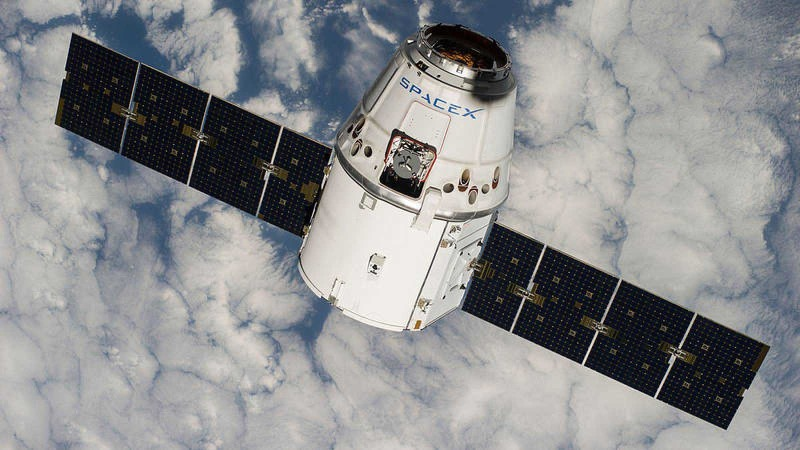

SpaceX’s Chief Engineer Elon Musk and T-Mobile’s CEO and President Mike Sievert announced today a breakthrough plan
to provide truly universal cellular connectivity.
Despite powerful LTE and 5G terrestrial wireless networks, more than 20% of the United States land area and 90% of
the Earth remain uncovered by wireless companies. These dead zones have serious consequences for remote communities and
those who travel off the grid for work or leisure. The telecom industry has struggled to cover these areas with
traditionalcellular technology due to land-use restrictions (e.g. National Parks), terrain limits (e.g. mountains, deserts and
other topographical realitiesand the in those areas, people are either left disconnected or resort to globe’s sheer
vastness.Lugging around a satellite phone and paying exorbitant rates.
Leveraging Starlink, SpaceX’s constellation of satellites in low Earth orbit,and T-Mobile’s wireless network,
the companies are planning to provide customers text coverage practically everywhere in the continental US,
Hawaii, parts of Alaska, Puerto Rico and territorial waters, even outside the signal of T-Mobile’s network.
The service will be offered starting with a beta in select areas by the end of next year after SpaceX’s planned
satellite launches. Text messaging, including SMS, MMS, and participating messaging apps, will empower customers to stay connected
and share experiences nearly everywhere. Afterwards, the companies plan to pursue the addition of voice and data
coverage.
In addition, Elon and Mike shared their vision for expanding Coverage Above and Beyond globally, issuing an open
invitation to the world’s carriers to collaborate for truly global connectivity. T-Mobile committed to offer
reciprocal roaming to those providers working with them to enable this vision.
This service will have a tremendous impact on the safety, peace of mind,and individual and business opportunities around the globe.
The applications range from connecting hikers in national parks, rural communities, remote sensors and devices,
and people and devices in emergency situations, such as firefighters.
This satellite-to-cellular service will provide nearly complete coverage anywhere a customer can see the sky—meaning
you can continue texting and eventually make a cell phone call even when you leave terrestrial coverage.
We’ve designed our system so that no modifications are required to the cell phone everyone has in their pocket today,
and no new firmware, software updates, or apps are needed. As a complementary technology to terrestrial networks, SpaceX can enable mobile network operators to connect
more people, fulfill coverage requirements, and create new business opportunities.
Contacto: If you represent a mobile network operator or regulatory agency and are interested in partnering with SpaceX to bring this new level of mobile
connectivity to your region, please reach out to us at direct2cell@spacex.com.
DESIGNING AND BUILDING SAFE, RELIABLE AND DEMISABLE SATELLITES

SpaceX satellites are designed and built for high reliability and redundancy in
both supply chain and satellite design to successfully carry out their five-year design life.
Rigorous part and system-level screening and testing enable us to reliably build and launch satellites at very high rates.
We have the capacity to build up to 45 satellites per week, and we have launched up to 240 satellites in a single month.
This is an unprecedented rate of deployment for a complex space system
and reflects SpaceX’s commitment to increase broadband accessibility around the world with Starlink as soon as feasible.
Our satellites use multiple strategies to prevent debris generation in space: design for demise, controlled deorbit to low altitudes,
low orbit insertion, low operating orbit, on-board collision avoidance system, reducing the chance small debris will damage the satellite
with a low profile satellite chassis and using Whipple shields to protect the key components, reducing risk of explosion with extensive
battery pack protection, and failure modes that do not create secondary debris.
When a satellite’s altitude decays, it encounters a constantly increasing atmospheric density. Initially, these molecules impact the satellite,
but as the air density increases, a high-pressure shock wave forms in front of the spacecraft. As the satellite slows down and descends into
the atmosphere, its orbital energy is transferred into the air, heating it to a plasma. The hot plasma sheath envelops the satellite,
causing intense heating. Starlink satellites are designed to demise as they reenter the Earth’s atmosphere, meaning they pose no risk
to people or property on the ground. Design for demise required the investment of significant engineering resources and often required
adding cost and even mass to our satellites, such as our decision to use aluminum rather than composite overwrap pressure vessels
for the fuel tank for our propulsion system. SpaceX has safely deorbited over 200 satellites utilizing this approach. By building reliable,
debris minimizing satellites, planning for active deorbit and designing for full demisability, we ensure we’re keeping space sustainable and safe.